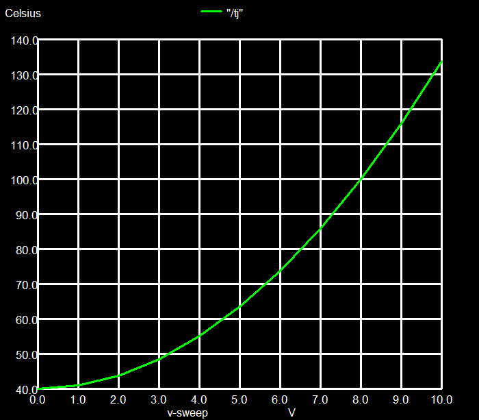
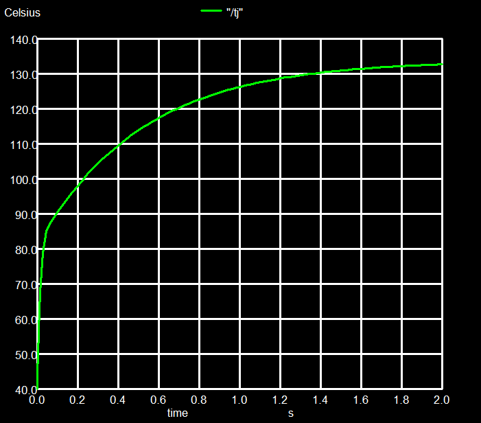
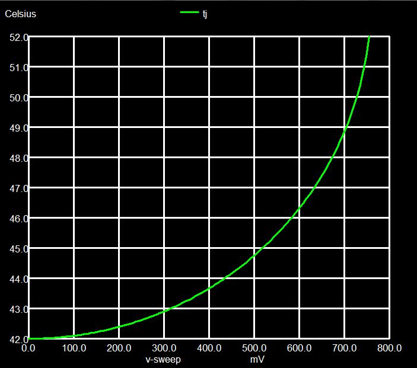
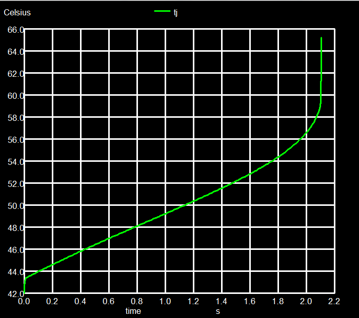
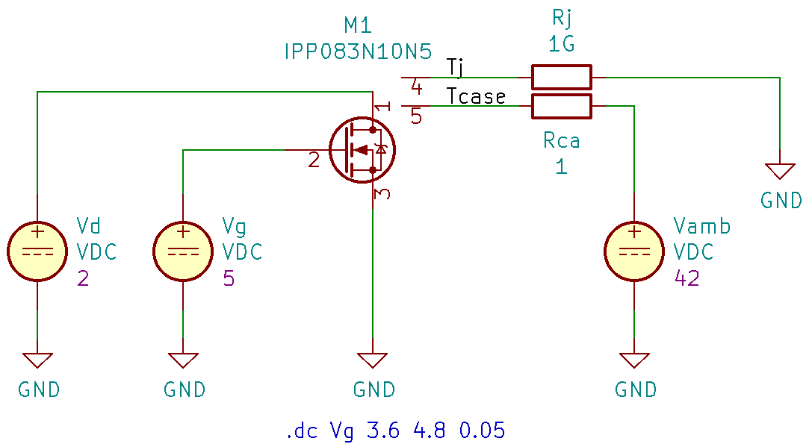
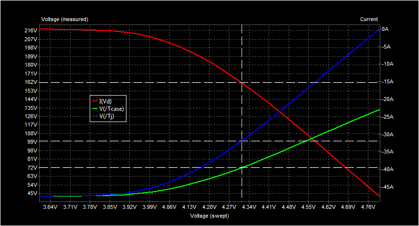
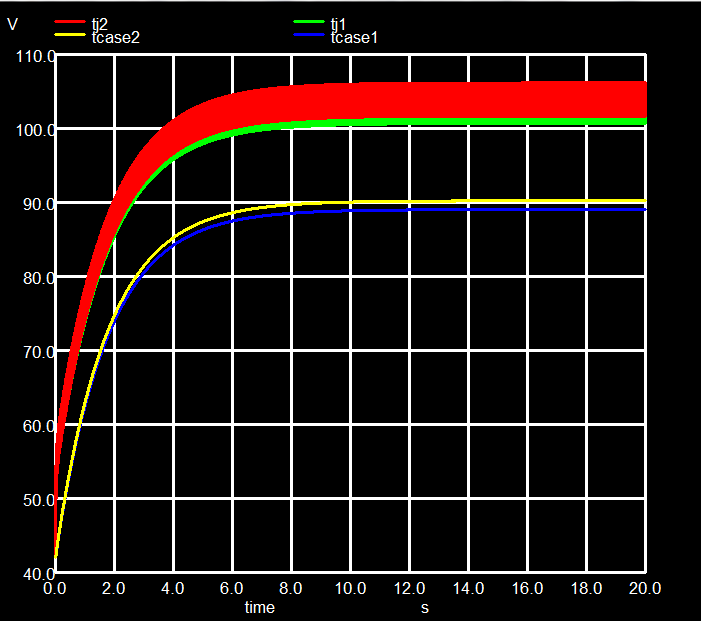
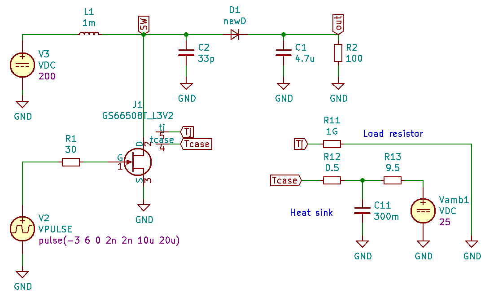
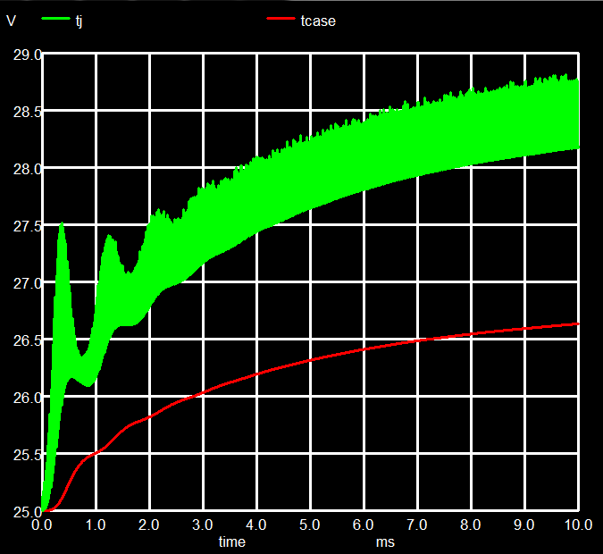
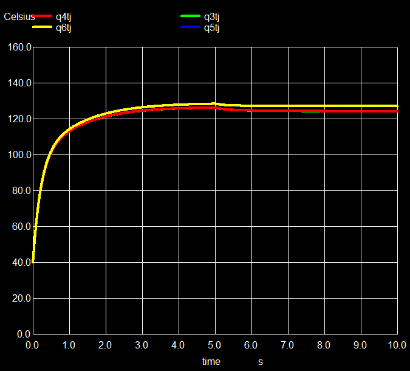

Tutorial: ngspice electro-thermal simulation
- Introduction
- Thermal modeling
- A resistor is heated
- Resistor with heat sink
- Resistor with thermal model
- Thermal runaway
- Power transistor with subcircuit model
- Amplifier with Power MOS
- Boost converter with GaN transistor
- Power transistor with ngspice VDMOS model
- More on heat sinks
- Appendix 1: Some equations
- Appendix 2: How temperature is handled in ngspice
Introduction
If you run an electronic circuit, a large amount of the electrical power put into it may be "lost", and converted to heat. The circuit may comprise of an integrated circuit, a discrete power transistor, or a passive resistor etc..
This heat has to find a path to flow away. If this is not possible, that is the device is (more or less) thermally isolated, it will "heat up", or to be more precise, its temperature compared to its environment will rise continuously, unlimited (well, probably not, but rather limited by melting or evaporation).
The heat flow will be best along a metal path, like the one offered by a heat sink, and is impeded if such cooling measures are missing. So there is a resistance against heat flow, less if we have a metal path, larger if we just have air cooling of the bare device. Less cooling capability, i.e. higher thermal resistance, will yield higher temperatures of the devices.
This temperature increase (to be more precise: the increase of the temperature difference between the device and its environment) does not reach its final value immediately after the power has been switched on. It may take some time. If the power is removed, the temperature does not drop instantaneously, but again this will take some time. So there seems to be some heat storage mechanism, with charging and discharging phenomena.
1) Thermal modeling
If you look at the wording in the intro section above, several notions resemble what we are used to in electrical engineering, even if we talk about thermal issues. We have thermal resistance, similar to electrical, heat (flow) resembles current flow, the temperature difference, generated by a heat flow through a thermal resistor, sounds like a potential difference (aka voltage), charging and discharging a heat storage seems to be similar to charging or discharging a capacitor. And exactly that's it: we may model thermal effects with an electrical equivalent circuit. The following table lists the corresponding electrical and thermal terms.
| Thermal | Electrical | |||
|---|---|---|---|---|
| Heat (dissipated power) | [W] | Current | [A] | |
| Temperature difference | [ºC] or [K] | Voltage | [V] | |
| Thermal resistance | [W/K] | Electrical resistance | [V/A] or [Ω] | |
| Thermal capacitance | [J/K] | Electrical capacitance | [As/V] or [F] | |
For electro-thermal simulation we now will use two circuit diagrams. The electronic circuit comprises of all the usual devices like ICs, transistors, passive components etc. Simulating this circuit yiels the node voltages and branch currents, as usual. Especially for power transistors it is of interest to learn about their thermal behavior. So each of these devices will get its additional thermal circuit, comprising of a controlled current source as the heat source, resistors and capacitors to create the heat flow path (e.g. the heat sink, or air cooling), and voltage sources to set temperatures. The thermal circuit delivers as a simulation result the temperatures for example of the transistor junction or channel Tj and its case temperature Tc, when a specific ambient temperature Ta is given.
The first link between the two circuits is that the electrical power dissipated by the electronic device sets the current (heat flow) in the thermal equivalent circuit. The second link is a feedback loop, in that the calculated junction temperature Tj will influence the electrical behavior of the device. This feedback however requires a device simulation model that allows to set its temperature on the fly during the simulation, not only at the beginning, while setting up the simulation.
The following examples are compatible to KiCad 5.1.12 with ngspice-34 (or newer).
2) A resistor is heated
The first example is a simple resistor R1, with applied voltage V1, resulting in a dissipated power I1 * V1, where I1 is the current through R1. The 0 V voltage source Vmeas serves to measure this current.
In this example the resistor is assumed to be a surface mounted 1206 device with 100 Ω. This small 1206 package, soldered to a pcb, will yield a thermal resistance of about 200 K/W. The heat will be taken away by air (via natural convection) and through the device's pads.
Our thermal circuits thus comprises of a current source equivalent to the electrical power (the Bq... line). The current flows through the resistor Rja that equals the thermal resistance, the ambient is at temperature tamb, set by the voltage source Vamb.
The ngspice netlist contains both the electrical and the thermal circuits and some simulation controls:
electro-thermal simple resistor
* electrically heated resistor
***electrical circuit**********
*voltage V1 across resistor R1
V1 1 0 dc 5
*measure the current through R1
Vmeas 11 1 0
R1 11 0 100
***thermal circuit*************
*power (heat flow) to current
Bq tj 0 I = i(Vmeas) * v(11)
*thermal resistance from 1206 resistor to ambient
Rja tj tamb 200
*ambient temperature
Vamb tamb 0 40
***simulation control**********
.control
op
print tj
.endc
.end
The result of the electrical circuit is a power of 250 mW dissipated in the resistor as heat. This heat flows through the thermal resistance of 200 K/W, yielding a temperature difference of 50 K. The ambient temp is 40 ºC, the resistor thus heats up to 90 ºC.
[1] https://www.vishay.com/docs/53048/pprachp.pdf
3) Resistor with heat sink
The next example is a power resistor R1 in a TO263 package, mounted on a heat sink. Again a voltage V1 is applied, resulting in a dissipated power I1 * V1, where I1 is the current through R1. The 0 V voltage source Vmeas serves to measure this current. The thermal circuit is somewhat more complex now, so there is a circuit diagram shown below in Fig.1.
The thermal circuit starts on the left with the behavioral source Bq, issuing a current proportional to the dissipated power I1 * V1. The example power resistor D2TO35 has a thermal resistance from its resistance layer (traditionally called "junction") to the outside case of 4.28 K/W. The capacitor Cj mimics the thermal capacitance of the resistor chip in its TO263 package. This package is mounted to a heat sink by clipping or screwing, using thermal grease, that leads to a low thermal resistance between package and heat sink Rch of only 0.1 K/W. The heat sink is estimated to have a thermal resistance Rha = 5 K/W and a thermal capacitance Ch = 0.3 J/K. The ambient temp is 40 ºC. Of interest is the junction temperature Tj, that is limited according to the data sheet to 175 ºC. Fig. 2 shows the result of a dc simulation, varying the voltage on the 10Ω resistor from 0 to 10 V. The curve plots the final temperature Tj, measured at node tj. Even at 10 V, yielding a power dissipation of 10 W, the temperature rises to no more than 134 ºC, still below the specified maximum of 175 ºC.
|  |  |
| Fig. 2 Temperature versus voltage of the resistor | Fig. 3 Temperature as function of time at constant bias |
If you replace
.dc V1 0 10 1
by
.ic V(/tj) = 40
.tran 0.02 2
then the temperature rise is simulated versus time. Fig. 3
is such a plot of T versus time. It takes 2 to 3 seconds
before the final temperature has been reached.
The files to create fig. 1 and a commented ngspice netlist are available here.
[2] Data sheet D2TO35: www.vishay.com/docs/51058/d2to35.pdf
4) Resistor with thermal model
What is still missing in the examples so far is the feedback loop. The device temperature, its "junction" temperature rises, and this should have an influence on the device parameters. So for a metal thin film, if its temperatures rises, its resistance rises as well, again influencing the power dissipation, thus changing the temperature etc..., a classical feedback situation.
Unfortunately the standard ngspice resistor (manual chapt. 3.2.1) model is not adequate, because the temperature dependencies listed there are all static, that is they are evaluated before the simulation starts. We need a behavioral model, an electrical model that reads and takes into account the (varying) junction temperature Tj during the simulation. This may be served by a subcircuit model, having 2 in/out nodes, a node tj for the junction temperature, and a node tcase for the case temperature. The junction temperature is what we are interested in, so we use this node tj to measure Tj. The case is the device's thermal connection, where to add the heat sink. If no heat sink is used, a (typically large) thermal resistance applies, given by natural convection around the device package. An example of such a subcircuit model is given below.
* subcircuit resistor model
.subckt resmod n1 n2 tj tcase rr=1 tcr1=0 tcr2=0
***electrical circuit
R1 n1 n22 R = {rr * (1 + tcr1 * V(tj, tref) + tcr2 * V(tj, tref) * V(tj, tref))}
* measure the resistor current
Vmeas n22 n2 0
***thermal circuit
*power to heat flow
Bq tj tamb I = i(Vmeas) * v(n1, n2) *(-1)
*thermal resistance from resistor (aka junction) to case
Rjc tj tcase 0.72
*thermal capacity of resistor
Cth tj 0 3m $ the die
*internal minimum R case to ambient
Rca tcase tamb 100 $ just an estimate, as if no heat sink is applied
.ends
The main equation
R1 n1 n22 R = {rr * (1 + tcr1 * V(tj, tref) + tcr2 * V(tj, tref) * V(tj, tref))}
calculates the resistance as function of the resistor layer temperature Tj
(the junction), compared to the reference temperature Tref, where
only the zero resistance rr applies. Linear (tcr1) and quadratic (tcr2) temperature
coefficients determine the temperature behavior. The resistor may now be instantiated
in the circuit by
XR1 1 0 tj tdev resmod rr=1 tcr1=0.05 tcr2=1e-4
Thus the feedbackloop is closed: Bq provides the power information, Tj rises do to the
heat flow through the series of thermal resistances and finally feeds back the temperature
to the device.
The complete, commented ngspice netlist is available here.
5) Thermal runaway
The above example uses a resistor with a positive temperature coefficient, as it is typical in metals (well, somewhat exaggerated to show the effect, tcr1=0.005 is closer to reality than 0.05). What will happen if we have a semiconductor resistor with negative coefficient, that is a rising temperature decreases the resistance, e.g. with linear coefficient -0.03/K?
XR1 1 0 tj tdev resmod rr=1 tcr1=-0.03 tcr2=1e-4
The result is shown in figs. 4 and 5:
|  |  |
| Fig. 4 Temperature versus voltage of the resistor | Fig. 5 Temperature at constant bias, thermal runaway |
As a function of the voltage applied to the resistor, the final junction temperature Tj rises faster and faster in Fig. 4, above 0.75 V ngspice does not converge any more, the temperature rises beyond bounds. In Fig. 5 we have applied 1 V to the resistor and start the transient device simulation (voltages and currents versus time) at an ambient temperature of 42 ºC. The temperature rises versus time, finally beyond bounds. This is a typical thermal runaway that would lead to device destruction, if not limited externally.
6) Power transistor with subcircuit model
To optimize power electronic circuits, we want to use smaller transistors and less bulky heat sinks. On the other hand there is always heat generated in the transistor channels and junctions. Therefore we need power transistor models with access to "heat" nodes and an internal feedback, as we have already seen in chapt 4 for our temperature dependent resistor.
Such a class of models is for example offered by Infineon with its Level3 subcircuit models for MOS power devices [3], [4]. The transistor now has 5 nodes. Besides D, G, and S we have tj and tcase. Heat is generated in the MOS channel (or junction in bipolar devices), its temperature is available and may be measured at node tj, and is fed back internally into the device equations. Within the transistor package the heat is flowing from the channel to the metal surface of the case, at node tcase. Here you may connect a heat sink, to offer a flow path for the heat away from the device. The internal heat resistance is Rjc (junction to case), a typical data sheet value. The model also includes the heat capacitance of the semiconductor die and package (typically not available in the data sheet, so to be estimated only).
A simple circuit for characterizing a power MOS device is shown in fig. 6, together with its current and temperature simulations in fig. 7. The standard MOS symbol has been modified in fig. 6 (Drawing done with KiCad/Eeschema): Two extra nodes provide the connections to the thermal circuit. tj may be used to read the junction temperature. Resistor Rj is just a dummy load so Eeschema will not complain about not connected nodes. Rca is our heat sink with 1 K/W, connected between the transistor package metal back plate (the case) and the ambient temperature set to 42 ºC by the voltage source Vamb.
|  |  |
| Fig. 6 Circuit with Vg sweep, 5-terminal MOS | Fig. 7 Vg swept, temperature rising, current decreasing |
And we may check the simulation results: At gate voltage 4.31 V we have a drain current Id = 15.2 A. Multiplied by the 2 V drain voltage, we get a power dissipation of 30.4 W. The internal Rjc is 1.1 K/W, the heat sink thermal resistance Rca is 1 K/W, the ambient temperature is 42 ºC. The resulting junction temperature is calculated to Tj = P * (Rjc + Rca) + 42 ºC = 105.8 ºC, as we also roughly read from the graph of Tj. The case temperature follows as Tcase = P * Rca + 42 ºC = 72.1 ºC. Besides other MOS devices [5] also GaN FETs [6] use such five-terminal models.
[3] https://www.infineon.com/dgdl/Infineon-ApplicationNote_PowerMOSFET_SimulationModels-AN-v01_00-EN.pdf
[4] https://www.infineon.com/dgdl/Thermal+Modeling.pdf
[5] https://www.onsemi.com/pub/Collateral/AN-7532.pdf.pdf
7) Amplifier with Power MOS
A small analog circuit, a 10 W power amplifier with 2 NMOS power transistors in the output stage [7] serves as an example for the electro-thermal simulation. Again we are using the NMOS symbol with two extra thermal nodes. The nodes tj are tied to dummy load resistors, one can read the junction temperature here. Nodes tcase are connected to heat sinks, which have a thermal resistance and a thermal capacitance. The resulting KiCad/Eeschema and ngspice circuit files are available here.
Fig. 8 Dual NMOS Amplifier
The Eeschema circuit schematic is accompanied by a ngspice script (see fig. 9). This script allows simulating the circuit from within Eeschema as well as simulating it off-line by standard ngspice, starting with Eeschema by Tools--> Generate Netlist File...-->Spice-->Run Simulator, as has been described here.
|
 |
| Fig. 9 Script for Eeschema/ngspice | Fig. 10 Rising junction and case temperatures |
A simulation showing the junction and case temperatures of both power MOS devices versus time is shown in fig. 10. Only after about 10 s the temperature has settled to a final value. Thermal time constants are in the seconds range, whereas the amplifier is driven by a 100 Hz signal. To achieve sufficient precision and allow a successful feedback loop, we have to simulate with high time resolution, e.g. 200 µs. To cover 20 s of simulated time, a relatively large CPU time may be required.
[7] http://www.tubecad.com/2009/08/blog0168.htm
8) Boost converter with GaN transistor
A warning: simulation in this chapter requires at least ngspice-31.
Thermal models with nodes tj and tcase are also availanble for the modern GaN power transistors. In Fig. 11 you find the circuit of a boost converter as published in [6]. Input files are available here.
|  |  |
| Fig. 11 Boost converter with GaN FET | Fig. 12 FET junction and case temperatures |
Again we are using a special symbol, a FET with the 2 extra thermal nodes. The first 10 ms after switching on lead to a temperature rising by 3.5 ºC, not too bad with a heat sink having only 10 K/W. This is not the temperature end point, the curve in Fig. 12 is still rising. But since this simulation took already about half an hour, catching the full heating up will require more than 5 hours of real time. Well, this needs to be done once to get an idea of the thermal behavior. The input file allows using internal as well as external ngspice.
The large amount of data requires some special handling. So here we do not store the whole amount of data (10m/2n = 5 Mio. time points), but interpolate and save only 5000 time points. This is achieved by the two input lines
.tran 2u 10m 0 2n
* tstep tstop tstart tmax
.option interp
(tstop-tstart)/tstep = 5000 sets the number of time steps after interpolation. Interpolation
is initiated by the interp option. tmax = 2n sets the
maximum time step during simulation. The small value is necessary to catch the fast voltage
excursions during simulation for this example. After 0.5 s (approx. 5 hours of ngspice CPU time) the temperature
has settled to 71 ºC (Tj) and 69 ºC (Tcase). This may be
achieved by a simulation command
.tran 100u 500m 0 2n
9) Power transistor with ngspice VDMOS model
Since version 32 ngspice contains a VDMOS power MOS model with comprehensive electro-thermal modeling capability. VDMOS comprises many features that allow describing the temperature depending current versus voltage characteristics. Among others ngspice VDMOS supports weak inversion, quasi-saturation, reverse diode, breakdown, bias dependent capacitances, and as a new feature and of importance for this tutorial: self-heating. In contrast to the subcircuit model used in section 7), the VDMOS model has an integrated self-heating calculation capability, using and influencing the internal device nodes directly. Details of the model are explained in chapter 11.3 of the ngspice manual.
A first advantage is that the simulation may run much faster. The amp of chapter 7 will simulate by a factor of 10 faster when using the new VDMOS model, compared to using a subcircuit model!
Self heating is enabled by setting the instance parameter 'thermal' to the devices instance
M1 d g s tj tc PowerM thermal
.model PowerM VDMOS (model parameters ...)
The model introduces 2 additional nodes: tj is the temperature node showing the junction temperature, and tc is the node containing the case temperature. It also introduces 3 additional model parameters: RTHJC (Thermal resistance junction-case), CTHJ (Thermal capacitance), and RTHCA (Thermal resistance case-ambient (w/o heatsink)). RTHJC is given in the device data sheet. RTHCA is the thermal resistance if the device is just contacted, but otherwise without any heat sink attached. Typical values are 40 - 120 K/W, or it is given in the data sheet as well. The thermal capacitance CTHJ may be estimated by the weight of the device. A device in an old fashioned TO-247 package may weight 5 - 6 g, of which 3 - 4 g may be copper (Cu). Cu has a specific heat capacity of 0.38 J/gK, times 3.5 g yields a CTHJ of 1.3. The metal content may be less, and distributed, so one may find values like 0.3. RTHJC may be 0.8 K/W. And then you have to mount this device onto the heatsink. Without isolation sheet this will add another 0.2 K/W, but when you need to electrically isolate the device from the heat sink (by a thin MICA sheet), this will add an additional 1 K/W or so. Better thermal transistor packages are available today, yielding a junction to heat sink thermal resistance close to 1 K/W, including the isolation, but are available only for specific industrial devices.
Again in this chapter there will be a circuit example. Nelson Pass has developed several high end class A audio amplifiers. A typical and famous example is the F5. Class A amps continuously draw a high current through the power transistors. So thermal management is a must.
Shown here in Fig. 13 is the schematic of the F5 Turbo V2. The simulation setup for Eeschema and/or ngspice is available here.
Fig. 13 Pass Labs F5 Turbo V2 Amplifier
The simulation of this amplifier yields excellent results: 50 W into 8 Ohm, 98 W into 4 Ohm, damping factor 58, voltage gain 22 dB (a factor of 12), all simulated at 2 V peak (1.41 V rms) and 1 kHz input. The frequency response is flat from 10 Hz to 500 kHz and shows a moderate neg. phase shift, etc..
However this tutorial is about electro-thermal simulation, so we have to focus on it. Fig. 13 is the electrical schematic. There are already some labels like Q3tj, Q4tc, Q6hs, that are to be connected. These are thermal nodes, used in modeling the thermal behavior of the power transistors, heat sinks and thermistors. Fig. 14 denotes the ngspice thermal circuit of the heat sink.
 |
 |
| Fig. 14 Heat sink for the F5 Turbo V2 | Fig. 15 Junction temperature rise at full output power |
In fact we have here 4 heat sinks, one for each power transistor. The Q3tc node (case temperature of Q3) is connected to the heat sink via a thermal resistor Rc1. Rc1 is the result of mounting the power device (via thermal paste, including a (MICA) isolation tab) onto the heat sink surface, whose thermal node is called Q3hs. Also connected to Q3hs is the thermistor TH1, a resistor with a temperature dependent resistance. Finally we have the thermal capacitance Cc1, that is determined by the material and mass of the heat sink. The heat flows through the heat sink via thermal resistance Rc2 and then into the ambient, that is at a temperature of 40 ºC in the example. This is a very simple heat sink model, and we may elaborate on more sophisticated descriptions in the next chapter.
Fig. 15 shows the resulting junction temperatures of the 4 power transistors. They are very similar because the amplifier is well balanced. Tmax is about 135 ºC. The data sheet allows operation up to 150 ºC, so there is not much headroom left.
10) More on heat sinks
Remember the old 100 W light bulb. Its diameter of approx. 5 cm leads to a surface area (sphere assumed) of about 78 cm2. And now remember how hot this thing was. One would not even dare to touch it when hot. And now we pour 100 W into our microprocessor (where it is transformed to heat) or dissipate it in our power transistor. And we now have a mere 2 cm2 chip area to get rid of the heat. So we need a device which catches the heat on the small area, spreads it over a much larger area and finally releases it to the ambient.
This is exactly what heat sinks are doing.
The static thermal circuit of a heat sink looks like
Fig. 16 Static thermal circuit of a heatsink
Rjc (junction-to-case) is set by the transistor construction, die size and package.
Rch (case-to-heatsink) is created by mounting the transistor package onto the heatsink, by thermal grease and especially by any insulation pad.
Rh (heatsink) is the heatsink thermal resistance, set by its material (Al or Cu) and its shape.
Rha (heatsink-to-ambient) is the resistance that has to be overcome by the heat when moving from the heatsink surface into the ambient air. It depends on the heatsink surface finish, on the surface area, and of course on the air movement (can the air move freely as in free convection, or is it impeded by obstacles, which should be avoided, or is it even moved by forced convection, e.g. an blower). Sometimes only the sum of Rh and Rha is given, but then a dedicated specification of the ambient is included in the fine print.
So we have three components, the heat source (e.g. a transistor), the heatsink and the interface in between, all contributing resistance against the heat flow.
We have also to consider some dynamic, i.e. time depending behavior of the heatsink, as its surface become warm (hot) only with a delay of at least several seconds after the heat source has been switched on (after power-on). This is due to the fact that all materials involved have a heat storage capacity, which may be filled during initial heat flow (temperature rising) until is has become stable with stable heat flows and temperatures. In addition also the electrical power dissipation may vary over time (not so much with the class A amp shown above, but common to other circuits). We emulate this heat storage by capacitors added to the above circuit (see Fig. 17).
The dynamic thermal circuit of a heat sink looks like
Fig. 17 Thermal circuit of a heatsink with heat storage
Two capacitors have been added to the thermal circuit. Cj denotes the heat storage capacity of the power MOS package. Ch is the heat capacity of the heatsink. There is also an additional resistor inside of the transistor package:
Rca (case-to-ambient) describes the inevitable heat path from the transistor to the environment, when the transistor is simply soldered into a PCB without any heatsink.
11) Appendix 1: Some equations
11.1 Thermal resistance
Rth = d/(k·A)
d path length
A area
k thermal conductivity
11.2 Thermal capacitance
Cth = A · d· c · ρ
d thickness
A area
c specific heat capacity
ρ density
11.3 Temperature increase of junction and case against ambient temperature
Tj = P·(Rjc + Rch + Rha) + Tamb
Tcase = P·(Rch + Rha) + Tamb
Tj Junction temperature
P Electrical power dissipated
Rjc Thermal resistance junction-to-case
Rch Thermal resistance case-to-heatsink
Rha Thermal resistance heatsink to ambient
Tamb Ambient temperature
More details are available for example in [8].
12) Appendix 2: How temperature is handled in ngspice
Electrothermal simulation using two circuits, an electrical and a thermal circuit, is treated in the above tutorial. This is a general approach and especially useful when simulating complex PCBs with different (discrete) devices, which may run at different temperatures, including temperature generated by self-heating.
However, ngspice already has a notion of temperature integrated as standard. All simulations are run at a default temperature of 27 C. This behavior originally stems from the simulation of integrated circuits, where you assume that all devices are simulated at the same temperature (in the silicon die inside of the IC package). Most device models in ngspice (bipolar, MOS etc.) include a temperature dependency. You may change the overall temperature, but also the temperature of individual device instances. Please have a look at chapter '1.3 Analysis at Different Temperatures' of the ngspice manual.
A simple example of a resistor with temperature sensitivity is given below:
* resistor temperature dependency
.param deltaT_R1 = 20
V1 1 0 1
R1 1 0 2 tc1=1e-2 tc2=1e-4 dtemp={deltaT_R1}
.op
.control
run
print i(V1)
.endc
.end
Changing the instance parameter dtemp (the temperature difference between default and this device R1)
will change the resistance value and thus the resulting current through V1.